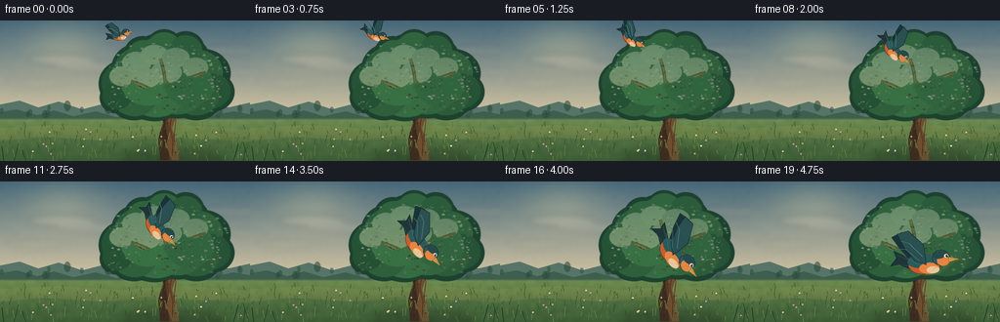
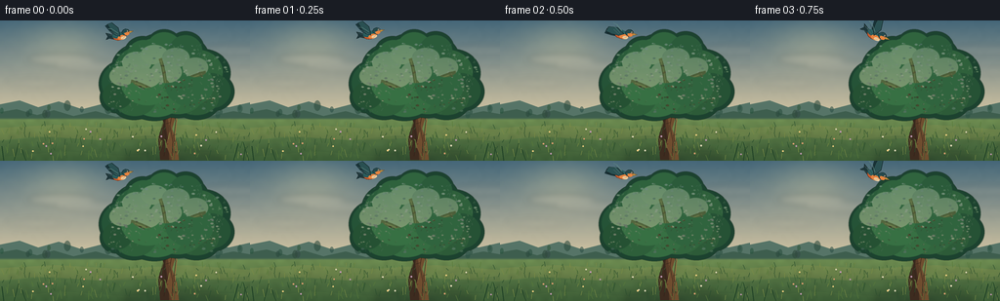
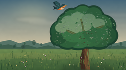
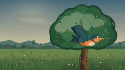
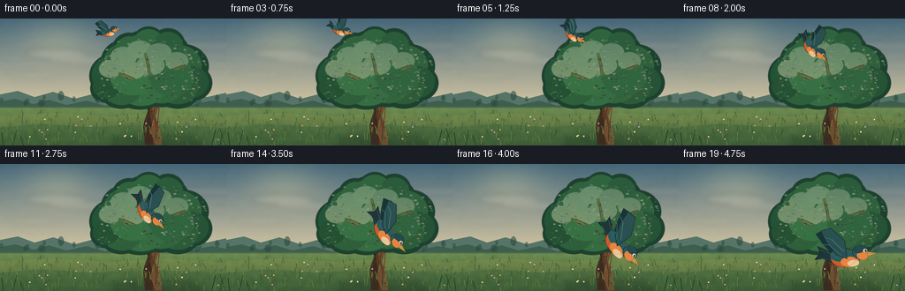
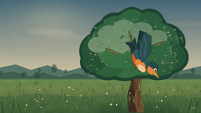
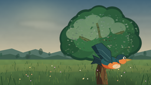

CODING AGENTS AS PIXEL WORLD MODELS
traex/DeepSeek-V4.1-Flash · dynamic_spatial_relationship_0046
点击播放 · 原生 RGB 像素
逐轮保存的候选
回放视频、检查图与代码变化。
每份候选均可单独播放。实际图片检查记录在下方工具轨迹中。
候选 01播放与检查图
点击播放 · 原生 RGB 像素

展开代码变化
--- 上一保存版本
+++ 本次保存版本
@@ -0,0 +1,575 @@
+"""Procedural text-to-video renderer for the bird-and-tree scene."""
+
+from __future__ import annotations
+
+import math
+import random
+from pathlib import Path
+
+import numpy as np
+from PIL import Image, ImageDraw, ImageFilter
+
+import artifact_io
+
+
+W, H, FPS, FRAMES = 256, 144, 4, 20
+S = 4
+CW, CH = W * S, H * S
+ROOT = Path(__file__).resolve().parent
+
+
+def sc(value: float) -> int:
+ return int(round(value * S))
+
+
+def pts(values):
+ return [(sc(x), sc(y)) for x, y in values]
+
+
+def mix(a, b, t):
+ return tuple(int(round(a[i] * (1.0 - t) + b[i] * t)) for i in range(3))
+
+
+def smoothstep(t: float) -> float:
+ t = min(1.0, max(0.0, t))
+ return t * t * (3.0 - 2.0 * t)
+
+
+def gradient_field(top, bottom, start_y, end_y):
+ field = np.zeros((CH, CW, 3), dtype=np.uint8)
+ yy = np.arange(CH, dtype=np.float32)[:, None]
+ t = np.clip((yy - start_y * S) / ((end_y - start_y) * S), 0.0, 1.0)
+ for channel in range(3):
+ field[:, :, channel] = np.rint(
+ top[channel] * (1.0 - t) + bottom[channel] * t
+ ).astype(np.uint8)
+ return field
+
+
+def soft_noise(width, height, seed, blur=18.0):
+ rng = np.random.default_rng(seed)
+ small = rng.normal(0.0, 1.0, (max(2, height // 18), max(2, width // 18)))
+ small = (small - small.min()) / max(1e-6, small.max() - small.min())
+ image = Image.fromarray(np.uint8(np.clip(small, 0, 1) * 255), "L")
+ image = image.resize((width, height), Image.Resampling.BICUBIC)
+ image = image.filter(ImageFilter.GaussianBlur(blur))
+ return np.asarray(image, dtype=np.float32) / 255.0
+
+
+def make_background():
+ sky = gradient_field((69, 103, 121), (220, 203, 165), 0, 104).astype(np.float32)
+ yy, xx = np.mgrid[0:CH, 0:CW]
+ nx = xx.astype(np.float32) / max(1, CW - 1)
+ ny = yy.astype(np.float32) / max(1, CH - 1)
+
+ # A broad, soft sunrise glow, not a hard celestial disk.
+ glow = np.exp(-(((nx - 0.255) / 0.29) ** 2 + ((ny - 0.16) / 0.32) ** 2) * 3.2)
+ for channel, amount in enumerate((34, 25, 10)):
+ sky[:, :, channel] += glow * amount
+
+ grain = soft_noise(CW, CH, 41, blur=2.2) - 0.5
+ sky += grain[:, :, None] * np.array([4.5, 4.0, 3.0], dtype=np.float32)
+ sky = np.clip(sky, 0, 255).astype(np.uint8)
+ image = Image.fromarray(sky, "RGB")
+ draw = ImageDraw.Draw(image, "RGBA")
+
+ # Pale cloud bands catch the morning light.
+ cloud = Image.new("RGBA", (CW, CH), (0, 0, 0, 0))
+ cd = ImageDraw.Draw(cloud, "RGBA")
+ cloud_shapes = [
+ (29, 34, 68, 12, (255, 235, 205, 34)),
+ (57, 42, 88, 11, (248, 226, 199, 24)),
+ (201, 26, 79, 9, (246, 224, 196, 24)),
+ (214, 48, 92, 8, (235, 216, 191, 18)),
+ (7, 60, 62, 8, (241, 224, 201, 20)),
+ ]
+ for x, y, w, h, color in cloud_shapes:
+ cd.ellipse((sc(x), sc(y), sc(x + w), sc(y + h)), fill=color)
+ cloud = cloud.filter(ImageFilter.GaussianBlur(sc(3.2)))
+ image = Image.alpha_composite(image.convert("RGBA"), cloud).convert("RGB")
+ draw = ImageDraw.Draw(image, "RGBA")
+
+ # Distant hills and a low tree line give depth without competing with the tree.
+ draw.polygon(
+ pts(
+ [
+ (0, 99),
+ (0, 86),
+ (20, 82),
+ (39, 89),
+ (60, 83),
+ (84, 91),
+ (107, 85),
+ (129, 90),
+ (154, 84),
+ (181, 90),
+ (209, 83),
+ (234, 89),
+ (256, 84),
+ (256, 112),
+ (0, 112),
+ ]
+ ),
+ fill=(86, 116, 103, 255),
+ )
+ draw.polygon(
+ pts(
+ [
+ (0, 101),
+ (0, 94),
+ (17, 91),
+ (38, 97),
+ (55, 92),
+ (75, 98),
+ (98, 93),
+ (119, 99),
+ (143, 93),
+ (167, 98),
+ (191, 92),
+ (215, 98),
+ (239, 93),
+ (256, 96),
+ (256, 116),
+ (0, 116),
+ ]
+ ),
+ fill=(62, 94, 78, 255),
+ )
+
+ # Tiny distant trees make the horizon read as a landscape, not a flat band.
+ rng = random.Random(22)
+ for i in range(22):
+ x = rng.uniform(0, 256)
+ y = rng.uniform(89.5, 99)
+ h = rng.uniform(3.5, 8.0)
+ color = (45 + rng.randint(-5, 8), 78 + rng.randint(-6, 9), 64 + rng.randint(-6, 7), 150)
+ draw.ellipse((sc(x - h * 0.42), sc(y - h), sc(x + h * 0.42), sc(y + h * 0.35)), fill=color)
+
+ # Meadow gradient.
+ meadow = gradient_field((109, 139, 80), (59, 91, 53), 101, 144).astype(np.float32)
+ meadow_noise = soft_noise(CW, CH, 63, blur=4.0)[:, :, None]
+ meadow *= 0.91 + meadow_noise * 0.18
+ meadow = np.clip(meadow, 0, 255).astype(np.uint8)
+ meadow_image = Image.fromarray(meadow, "RGB")
+ mask = Image.new("L", (CW, CH), 0)
+ md = ImageDraw.Draw(mask)
+ md.polygon(pts([(0, 101), (256, 101), (256, 144), (0, 144)]), fill=255)
+ mask = mask.filter(ImageFilter.GaussianBlur(sc(0.8)))
+ image.paste(meadow_image, (0, 0), mask)
+ draw = ImageDraw.Draw(image, "RGBA")
+
+ # Warm field bands and soft patches.
+ draw.polygon(
+ pts([(0, 110), (58, 107), (124, 111), (190, 107), (256, 112), (256, 124), (182, 120), (104, 123), (38, 119), (0, 123)]),
+ fill=(185, 158, 82, 34),
+ )
+ draw.polygon(
+ pts([(0, 124), (53, 119), (102, 123), (151, 118), (211, 122), (256, 118), (256, 137), (190, 134), (128, 139), (66, 134), (0, 140)]),
+ fill=(44, 76, 48, 36),
+ )
+
+ return image
+
+
+def draw_branch(draw, start, control, end, width, color, highlight=None):
+ samples = []
+ for i in range(20):
+ t = i / 19.0
+ x = (1 - t) ** 2 * start[0] + 2 * (1 - t) * t * control[0] + t * t * end[0]
+ y = (1 - t) ** 2 * start[1] + 2 * (1 - t) * t * control[1] + t * t * end[1]
+ samples.append((sc(x), sc(y)))
+ draw.line(samples, fill=color, width=sc(width), joint="curve")
+ if highlight:
+ draw.line(samples[:-2], fill=highlight, width=max(1, sc(width * 0.24)), joint="curve")
+
+
+def add_tree(image):
+ draw = ImageDraw.Draw(image, "RGBA")
+
+ # Ground shadow anchors the tree.
+ shadow = Image.new("RGBA", (CW, CH), (0, 0, 0, 0))
+ sd = ImageDraw.Draw(shadow, "RGBA")
+ sd.ellipse((sc(126), sc(132), sc(228), sc(151)), fill=(25, 42, 32, 72))
+ shadow = shadow.filter(ImageFilter.GaussianBlur(sc(4.0)))
+ image.alpha_composite(shadow) if image.mode == "RGBA" else image.paste(
+ Image.alpha_composite(image.convert("RGBA"), shadow).convert("RGB")
+ )
+ draw = ImageDraw.Draw(image, "RGBA")
+
+ trunk = [
+ (164, 143),
+ (183, 143),
+ (181, 125),
+ (176, 111),
+ (180, 98),
+ (176, 87),
+ (179, 76),
+ (176, 67),
+ (171, 61),
+ (166, 68),
+ (169, 79),
+ (164, 91),
+ (167, 104),
+ (162, 121),
+ ]
+ draw.polygon(pts(trunk), fill=(86, 58, 38, 255))
+ draw.polygon(
+ pts(
+ [
+ (164, 143),
+ (173, 143),
+ (172, 123),
+ (169, 106),
+ (171, 91),
+ (168, 77),
+ (171, 64),
+ (166, 68),
+ (169, 79),
+ (164, 91),
+ (167, 104),
+ (162, 121),
+ ]
+ ),
+ fill=(61, 43, 31, 255),
+ )
+ draw.polygon(
+ pts([(176, 143), (183, 143), (181, 125), (176, 111), (180, 98), (176, 87), (179, 76), (176, 67), (174, 66), (176, 82), (171, 97), (174, 112), (170, 128)]),
+ fill=(111, 77, 47, 255),
+ )
+
+ # Main limbs, drawn in back of the foliage.
+ limbs = [
+ ((172, 83), (153, 68), (134, 63), 5.0),
+ ((176, 74), (191, 58), (211, 54), 5.4),
+ ((169, 94), (147, 82), (131, 79), 3.8),
+ ((176, 91), (197, 83), (219, 82), 3.9),
+ ((170, 68), (168, 50), (164, 39), 3.6),
+ ((179, 72), (193, 65), (204, 66), 3.0),
+ ]
+ for start, control, end, width in limbs:
+ draw_branch(draw, start, control, end, width, (75, 51, 35, 255), (139, 95, 58, 220))
+
+ # Bark fissures and warm edge light.
+ bark = [
+ ((168, 139), (170, 123), (168, 107), (169, 90), (166, 73)),
+ ((176, 141), (177, 124), (174, 108), (177, 91), (175, 75)),
+ ((180, 136), (178, 120), (180, 103), (177, 87), (178, 74)),
+ ]
+ for line in bark:
+ draw.line(pts(line), fill=(49, 34, 26, 210), width=sc(0.55), joint="curve")
+ draw.line(pts([(181, 134), (179, 118), (181, 102), (178, 86)]), fill=(151, 107, 62, 165), width=sc(0.7))
+ for x, y, length in [(167, 128, 5), (177, 118, 4), (169, 106, 5), (179, 95, 4), (168, 86, 4), (176, 77, 3)]:
+ draw.line(pts([(x, y), (x + length, y - 1.5)]), fill=(49, 34, 25, 165), width=sc(0.45))
+
+ # Canopy: a dark supporting mass, then many smaller leafy crowns.
+ canopy = Image.new("RGBA", (CW, CH), (0, 0, 0, 0))
+ cd = ImageDraw.Draw(canopy, "RGBA")
+ base_clusters = [
+ (128, 65, 27, 25),
+ (143, 49, 29, 26),
+ (164, 38, 29, 25),
+ (186, 41, 29, 27),
+ (207, 54, 29, 25),
+ (218, 73, 22, 20),
+ (201, 82, 25, 20),
+ (181, 78, 29, 22),
+ (158, 81, 30, 22),
+ (137, 82, 24, 20),
+ (119, 79, 17, 16),
+ (174, 59, 32, 26),
+ (151, 65, 29, 25),
+ (194, 67, 27, 24),
+ (168, 26, 18, 17),
+ (190, 29, 19, 18),
+ (146, 34, 19, 18),
+ ]
+ for x, y, rx, ry in base_clusters:
+ cd.ellipse((sc(x - rx), sc(y - ry), sc(x + rx), sc(y + ry)), fill=(28, 66, 47, 255))
+
+ cluster_specs = [
+ (128, 64, 24, 22, (37, 83, 55)),
+ (143, 50, 26, 23, (43, 92, 58)),
+ (161, 41, 27, 23, (49, 101, 63)),
+ (181, 43, 26, 24, (42, 91, 57)),
+ (202, 53, 26, 23, (47, 96, 59)),
+ (216, 72, 20, 18, (38, 82, 53)),
+ (201, 79, 23, 18, (45, 91, 56)),
+ (182, 76, 26, 20, (50, 101, 61)),
+ (160, 79, 27, 20, (53, 108, 65)),
+ (138, 80, 22, 18, (46, 95, 58)),
+ (120, 77, 15, 14, (37, 81, 51)),
+ (174, 58, 29, 24, (53, 108, 65)),
+ (151, 64, 27, 23, (55, 112, 67)),
+ (194, 66, 25, 22, (48, 100, 62)),
+ (168, 27, 17, 15, (48, 100, 62)),
+ (190, 31, 17, 16, (43, 91, 58)),
+ (147, 36, 17, 16, (47, 98, 61)),
+ ]
+ for x, y, rx, ry, color in cluster_specs:
+ cd.ellipse((sc(x - rx), sc(y - ry), sc(x + rx), sc(y + ry)), fill=color + (255,))
+
+ # Upper-left rim light on the crowns.
+ rim_clusters = [
+ (125, 57, 13, 10, (84, 132, 78)),
+ (140, 43, 15, 11, (91, 141, 84)),
+ (158, 35, 14, 10, (98, 146, 86)),
+ (180, 38, 14, 10, (82, 130, 76)),
+ (200, 48, 13, 10, (78, 126, 74)),
+ (170, 53, 16, 11, (82, 132, 78)),
+ (149, 59, 15, 10, (88, 137, 81)),
+ ]
+ for x, y, rx, ry, color in rim_clusters:
+ cd.ellipse((sc(x - rx), sc(y - ry), sc(x + rx), sc(y + ry)), fill=color + (150,))
+
+ # Dense leaf flecks break up the ellipse silhouettes.
+ rng = random.Random(91)
+ for _ in range(440):
+ x = rng.uniform(111, 231)
+ y = rng.uniform(23, 94)
+ best = min(((x - cx) / rx) ** 2 + ((y - cy) / ry) ** 2 for cx, cy, rx, ry in base_clusters)
+ if best > 1.06:
+ continue
+ size = rng.uniform(0.55, 1.8)
+ if y < 58:
+ color = rng.choice([(80, 132, 78, 105), (65, 113, 68, 110), (101, 151, 88, 72), (44, 92, 58, 130)])
+ else:
+ color = rng.choice([(30, 72, 47, 125), (44, 90, 55, 105), (59, 107, 64, 80), (24, 59, 42, 110)])
+ if rng.random() < 0.46:
+ cd.ellipse((sc(x - size), sc(y - size * 0.55), sc(x + size), sc(y + size * 0.55)), fill=color)
+ else:
+ cd.line(
+ [(sc(x), sc(y)), (sc(x + rng.uniform(-1.8, 1.8)), sc(y + rng.uniform(1.0, 2.7)))],
+ fill=color,
+ width=max(1, sc(0.34)),
+ )
+
+ # A few loose leaves at the outside edge.
+ for _ in range(24):
+ angle = rng.uniform(0, math.tau)
+ radius_x = rng.uniform(45, 63)
+ radius_y = rng.uniform(28, 37)
+ x = 174 + math.cos(angle) * radius_x
+ y = 59 + math.sin(angle) * radius_y
+ if 105 < x < 238 and 17 < y < 98:
+ cd.ellipse((sc(x - 1.1), sc(y - 0.55), sc(x + 1.1), sc(y + 0.55)), fill=(64, 111, 65, 170))
+
+ canopy = canopy.filter(ImageFilter.GaussianBlur(sc(0.22)))
+ image.alpha_composite(canopy) if image.mode == "RGBA" else image.paste(
+ Image.alpha_composite(image.convert("RGBA"), canopy).convert("RGB")
+ )
+
+
+def add_ground_details(image):
+ draw = ImageDraw.Draw(image, "RGBA")
+ rng = random.Random(117)
+
+ # Grass blades are concentrated at the bottom edge.
+ for _ in range(250):
+ x = rng.uniform(0, 256)
+ y = rng.uniform(108, 144)
+ height = rng.uniform(2.0, 8.0) * (0.7 + (y - 108) / 50)
+ lean = rng.uniform(-2.3, 2.3)
+ color = rng.choice([(55, 91, 48, 150), (88, 121, 58, 130), (41, 76, 45, 160), (123, 139, 70, 90)])
+ draw.line([(sc(x), sc(y)), (sc(x + lean), sc(y - height))], fill=color, width=max(1, sc(0.38)))
+
+ # Small wildflowers give scale without drawing attention from the bird.
+ flower_colors = [(237, 205, 128), (221, 157, 112), (226, 217, 184), (190, 150, 177)]
+ for _ in range(24):
+ x = rng.uniform(8, 247)
+ y = rng.uniform(113, 140)
+ if 158 < x < 190 and y > 125:
+ continue
+ color = rng.choice(flower_colors)
+ draw.line([(sc(x), sc(y)), (sc(x), sc(y - 2.2))], fill=(53, 82, 45, 170), width=max(1, sc(0.25)))
+ draw.ellipse((sc(x - 0.8), sc(y - 3.3), sc(x + 0.8), sc(y - 1.7)), fill=color + (210,))
+
+ # Foreground grass frame, kept sparse so the tree and bird remain readable.
+ for x, base_y, tip_x, tip_y, width in [
+ (4, 145, 2, 129, 1.1),
+ (14, 145, 19, 126, 0.85),
+ (27, 145, 22, 132, 0.7),
+ (239, 145, 244, 126, 0.95),
+ (249, 145, 251, 130, 0.75),
+ (255, 145, 249, 125, 0.8),
+ ]:
+ draw.line(pts([(x, base_y), (tip_x, tip_y)]), fill=(33, 66, 39, 215), width=sc(width))
+
+
+def ellipse_points(cx, cy, rx, ry, rotation=0.0, count=40):
+ result = []
+ cr, sr = math.cos(rotation), math.sin(rotation)
+ for i in range(count):
+ a = math.tau * i / count
+ x, y = rx * math.cos(a), ry * math.sin(a)
+ result.append((cx + x * cr - y * sr, cy + x * sr + y * cr))
+ return result
+
+
+def transform(points, cx, cy, scale, angle):
+ ca, sa = math.cos(angle), math.sin(angle)
+ out = []
+ for x, y in points:
+ out.append((cx + (x * ca - y * sa) * scale, cy + (x * sa + y * ca) * scale))
+ return out
+
+
+def draw_bird(image, cx, cy, scale, angle, wing_phase, wing_amplitude):
+ draw = ImageDraw.Draw(image, "RGBA")
+ wing_angle = -0.04 + wing_amplitude * math.sin(wing_phase)
+
+ def poly(points, fill, outline=None, width=0.45):
+ q = pts(transform(points, cx, cy, scale, angle))
+ draw.polygon(q, fill=fill)
+ if outline:
+ draw.line(q + [q[0]], fill=outline, width=max(1, sc(width)))
+
+ def ellipse(cx0, cy0, rx, ry, fill, rotation=0.0, outline=None, width=0.35):
+ local = ellipse_points(cx0, cy0, rx, ry, rotation)
+ q = pts(transform(local, cx, cy, scale, angle))
+ draw.polygon(q, fill=fill)
+ if outline:
+ draw.line(q + [q[0]], fill=outline, width=max(1, sc(width)))
+
+ def line(points, fill, width=0.4):
+ draw.line(pts(transform(points, cx, cy, scale, angle)), fill=fill, width=max(1, sc(width)), joint="curve")
+
+ dark = (24, 38, 39, 255)
+ slate = (38, 73, 76, 255)
+ teal = (40, 91, 92, 255)
+ teal_light = (72, 129, 123, 255)
+ orange = (205, 91, 43, 255)
+ orange_light = (231, 132, 63, 255)
+ cream = (230, 201, 157, 255)
+ gold = (207, 157, 70, 255)
+
+ # Farther wing, slightly offset and darker.
+ far_wing = [
+ (-2, -5),
+ (-8, -22),
+ (-29, -38),
+ (-43, -31),
+ (-31, -15),
+ (-15, 2),
+ (2, 5),
+ ]
+ far_wing = transform(far_wing, -3, -5, 1.0, wing_angle - 0.08)
+ poly(far_wing, (25, 52, 57, 235), (16, 32, 34, 240), 0.35)
+
+ # Forked tail.
+ tail = [(-13, -4), (-43, -18), (-39, -8), (-47, 2), (-35, 0), (-16, 8)]
+ poly(tail, (30, 53, 57, 255), (16, 31, 33, 255), 0.55)
+ line([(-17, -3), (-39, -13)], (64, 94, 92, 180), 0.5)
+ line([(-17, 3), (-38, 0)], (58, 87, 86, 150), 0.45)
+
+ # Body, back, and warm breast.
+ ellipse(-2, 0, 21, 12.8, orange, rotation=-0.05, outline=(92, 48, 29, 255), width=0.55)
+ ellipse(-7, -4.7, 17.5, 9.3, teal, rotation=-0.08, outline=None)
+ ellipse(4.5, 5.0, 13.5, 7.5, orange_light, rotation=-0.02)
+ ellipse(9.5, 7.0, 8.5, 4.7, cream, rotation=-0.08)
+
+ # Head and face.
+ ellipse(20.0, -9.0, 11.5, 10.5, teal, outline=(19, 38, 40, 255), width=0.5)
+ ellipse(23.0, -5.2, 8.2, 6.9, orange_light)
+ ellipse(18.5, -13.0, 9.4, 5.0, slate, rotation=-0.25)
+ # Pale eye ring and dark pupil.
+ ellipse(27.2, -11.5, 3.4, 3.2, (226, 216, 184, 255), outline=(28, 40, 40, 180), width=0.25)
+ ellipse(28.1, -11.6, 1.55, 1.8, (17, 27, 28, 255))
+ ellipse(28.6, -12.2, 0.55, 0.65, (244, 241, 218, 235))
+ # Beak.
+ poly([(30.5, -10.2), (44.5, -7.7), (31.0, -3.4)], gold, outline=(97, 70, 38, 220), width=0.35)
+ line([(32.0, -7.5), (40.5, -7.4)], (127, 89, 39, 160), 0.3)
+
+ # Near wing, large enough to read as a real flight pose.
+ near_wing = [
+ (1, -5),
+ (-3, -21),
+ (-25, -38),
+ (-39, -32),
+ (-29, -16),
+ (-13, 1),
+ (3, 5),
+ ]
+ near_wing = transform(near_wing, -2, -5, 1.0, wing_angle)
+ poly(near_wing, (42, 80, 82, 255), (20, 37, 39, 255), 0.55)
+ # Feather separations and a cool rim.
+ line([(-4, -10), (-22, -28), (-33, -31)], (98, 139, 129, 170), 0.55)
+ line([(-8, -5), (-27, -20), (-35, -20)], (76, 118, 114, 145), 0.45)
+ line([(-11, 0), (-29, -11)], (66, 104, 102, 135), 0.4)
+ line([(-7, -8), (-26, -23)], (28, 51, 53, 155), 0.35)
+
+ # Warm cheek and belly feather accents, restrained at small sizes.
+ line([(14, 2), (9, 8), (3, 11)], (241, 164, 94, 150), 0.45)
+ line([(17, -2), (13, 5)], (229, 135, 70, 135), 0.35)
+
+
+def bird_pose(frame_index):
+ t = frame_index / (FRAMES - 1)
+ u = smoothstep(t)
+ cx = 123.0 + 57.0 * u + 2.0 * math.sin(math.pi * t)
+ cy = 16.0 + 69.0 * u - 11.0 * math.sin(math.pi * t)
+ scale = 0.32 + 0.45 * u
+
+ dt = 1e-4
+ t2 = min(1.0, t + dt)
+ u2 = smoothstep(t2)
+ cx2 = 123.0 + 57.0 * u2 + 2.0 * math.sin(math.pi * t2)
+ cy2 = 16.0 + 69.0 * u2 - 11.0 * math.sin(math.pi * t2)
+ angle = math.atan2(cy2 - cy, cx2 - cx)
+ angle = max(-0.2, min(0.92, angle))
+
+ phase = 2.0 * math.pi * 1.55 * (frame_index / FPS) + 0.35
+ amplitude = 0.78 * (1.0 - 0.68 * u)
+ return cx, cy, scale, angle, phase, amplitude
+
+
+def render_frame(background, index):
+ image = background.copy().convert("RGBA")
+ cx, cy, scale, angle, phase, amplitude = bird_pose(index)
+
+ # A very soft contact shadow separates the final foreground pose from the tree.
+ shadow_strength = int(8 + 18 * smoothstep(index / (FRAMES - 1)))
+ if shadow_strength > 10:
+ shadow = Image.new("RGBA", (CW, CH), (0, 0, 0, 0))
+ draw_bird(
+ shadow,
+ cx + 1.8,
+ cy + 2.2,
+ scale * 1.02,
+ angle,
+ phase,
+ amplitude,
+ )
+ alpha = np.asarray(shadow.getchannel("A"), dtype=np.float32)
+ alpha *= shadow_strength / 255.0
+ shadow.putalpha(Image.fromarray(np.uint8(np.clip(alpha, 0, 255)), "L"))
+ shadow = shadow.filter(ImageFilter.GaussianBlur(sc(1.3)))
+ image = Image.alpha_composite(image, shadow)
+
+ draw_bird(image, cx, cy, scale, angle, phase, amplitude)
+ return np.asarray(image.convert("RGB").resize((W, H), Image.Resampling.LANCZOS), dtype=np.uint8)
+
+
+def main():
+ background = make_background().convert("RGBA")
+ add_tree(background)
+ add_ground_details(background)
+ background = background.convert("RGB")
+
+ frames = [render_frame(background, i) for i in range(FRAMES)]
+ artifact_io.save(np.stack(frames, axis=0), ROOT)
+
+ # A lightweight preview is convenient for direct playback; the required
+ # canvas player and packed pixel tensor are produced by artifact_io.
+ preview = [Image.fromarray(frame) for frame in frames]
+ preview[0].save(
+ ROOT / "preview.gif",
+ save_all=True,
+ append_images=preview[1:],
+ duration=250,
+ loop=0,
+ optimize=True,
+ )
+
+
+if __name__ == "__main__":
+ main()
候选 02播放与检查图
点击播放 · 原生 RGB 像素


展开代码变化
--- 上一保存版本
+++ 本次保存版本
@@ -505,15 +505,15 @@
def bird_pose(frame_index):
t = frame_index / (FRAMES - 1)
u = smoothstep(t)
- cx = 123.0 + 57.0 * u + 2.0 * math.sin(math.pi * t)
- cy = 16.0 + 69.0 * u - 11.0 * math.sin(math.pi * t)
+ cx = 123.0 + 67.0 * u + 2.0 * math.sin(math.pi * t)
+ cy = 16.0 + 91.0 * u - 17.0 * math.sin(math.pi * t)
scale = 0.32 + 0.45 * u
dt = 1e-4
t2 = min(1.0, t + dt)
u2 = smoothstep(t2)
- cx2 = 123.0 + 57.0 * u2 + 2.0 * math.sin(math.pi * t2)
- cy2 = 16.0 + 69.0 * u2 - 11.0 * math.sin(math.pi * t2)
+ cx2 = 123.0 + 67.0 * u2 + 2.0 * math.sin(math.pi * t2)
+ cy2 = 16.0 + 91.0 * u2 - 17.0 * math.sin(math.pi * t2)
angle = math.atan2(cy2 - cy, cx2 - cx)
angle = max(-0.2, min(0.92, angle))
候选 03播放与检查图
点击播放 · 原生 RGB 像素

展开代码变化
代码未变化；重新保存了产物。

候选 05播放与检查图
点击播放 · 原生 RGB 像素

展开代码变化
--- 上一保存版本
+++ 本次保存版本
@@ -8,6 +8,7 @@
import numpy as np
from PIL import Image, ImageDraw, ImageFilter
+import imageio.v2 as imageio
import artifact_io
@@ -569,6 +570,7 @@
loop=0,
optimize=True,
)
+ imageio.mimsave(ROOT / "preview.mp4", frames, fps=FPS, codec="libx264", quality=8)
if __name__ == "__main__":
可观测工具轨迹
实际执行的命令与返回图片。
命令 1exit 0
/bin/bash -c "pwd && rg --files -g 'prompt.txt' -g 'GENERATION_RULES.md' -g 'task_spec.json' -g '"'!*.mp4'"' -g '"'!*.png'"' -g '"'!*.jpg'"'"
命令 2exit 0
/bin/bash -c 'ls -la'
命令 3exit 0
/bin/bash -c 'cat prompt.txt'
命令 4exit 0
/bin/bash -c 'cat GENERATION_RULES.md'
命令 5exit 0
/bin/bash -c 'cat task_spec.json'
命令 6exit 0
/bin/bash -c "sed -n '1,260p' artifact_io.py"
命令 7exit 0
/bin/bash -c "python - <<'PY'
import PIL, numpy
print('Pillow', PIL.__version__, 'numpy', numpy.__version__)
PY"命令 8exit 0
/bin/bash -c 'command -v ffmpeg || true'
命令 9exit 0
/bin/bash -c 'python generate.py'
命令 10exit 0
/bin/bash -c 'python generate.py'
命令 11exit 0
/bin/bash -c "python - <<'PY'
import importlib.util
for name in ('imageio','imageio_ffmpeg','cv2','av'):
print(name, bool(importlib.util.find_spec(name)))
PY"命令 12exit 0
/bin/bash -c 'ls -lh frames inspection.png transition_check.png pixels.npz index.html preview.gif generate.py'
命令 13exit 0
/bin/bash -c "python - <<'PY'
from pathlib import Path
from PIL import Image
import numpy as np
frames=sorted(Path('frames').glob('*.png'))
arr=np.stack([np.asarray(Image.open(p).convert('RGB')) for p in frames])
print('frames', arr.shape, arr.dtype)
print('range', int(arr.min()), int(arr.max()))
d=np.abs(arr[1:].astype(np.int16)-arr[:-1].astype(np.int16))
print('temporal mean abs diff', float(d.mean()))
print('changed pixel fraction per transition', np.round((d.max(axis=3)>2).mean(axis=(1,2)),4).tolist())
print('first size', Image.open(frames[0]).size, 'last size', Image.open(frames[-1]).size)
PY"命令 14exit 0
/bin/bash -c 'python generate.py'
命令 15exit 0
/bin/bash -c "python - <<'PY'
from pathlib import Path
import json, numpy as np, imageio.v2 as imageio
from PIL import Image
frames=np.stack([np.asarray(Image.open(p)) for p in sorted(Path('frames').glob('*.png'))])
spec=json.loads(Path('task_spec.json').read_text())
assert frames.shape==(20,144,256,3) and frames.dtype==np.uint8
z=np.load('pixels.npz')['pixels']
assert z.shape==(144,256,20)
video=imageio.get_reader('preview.mp4')
meta=video.get_meta_data(); count=video.count_frames()
print('png tensor:', frames.shape, frames.dtype)
print('packed tensor:', z.shape, z.dtype)
print('preview mp4:', count, 'frames,', meta['fps'], 'fps,', meta['size'])
print('player:', Path('index.html').stat().st_size, 'bytes')
PY"命令 16exit 0
/bin/bash -c "python - <<'PY'
from pathlib import Path
from PIL import Image
import numpy as np
frames=[np.asarray(Image.open(p)) for p in sorted(Path('frames').glob('*.png'))]
# Bird-colored pixel centroid in the sky region, then bbox around the changed foreground area.
for i in (0,5,10,15,19):
a=frames[i]
orange=(a[:,:,0]>150)&(a[:,:,0]>a[:,:,1]*1.35)&(a[:,:,1]<150)
ys,xs=np.where(orange[:100])
print(i, (round(float(xs.mean()),1),round(float(ys.mean()),1)) if len(xs) else None, len(xs))
PY"命令 17exit 0
/bin/bash -c 'ls -lh preview.mp4'
命令 18exit 0
/bin/bash -c 'git status --short 2>/dev/null || true'
视觉工具实际返回图片 1

视觉工具实际返回图片 2

视觉工具实际返回图片 3

视觉工具实际返回图片 4

视觉工具实际返回图片 5

视觉工具实际返回图片 6

视觉工具实际返回图片 7

保存候选 5 份；完成命令 18 次；可验证图片返回 7 张。原始 API 响应与完整日志保留在本地。